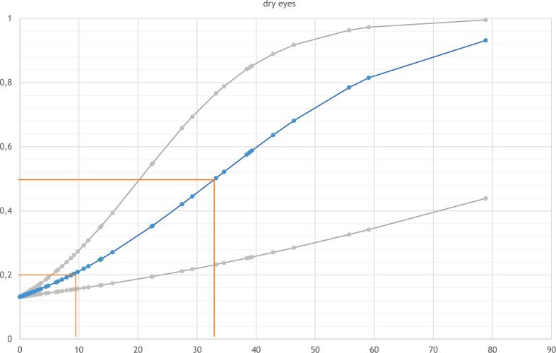
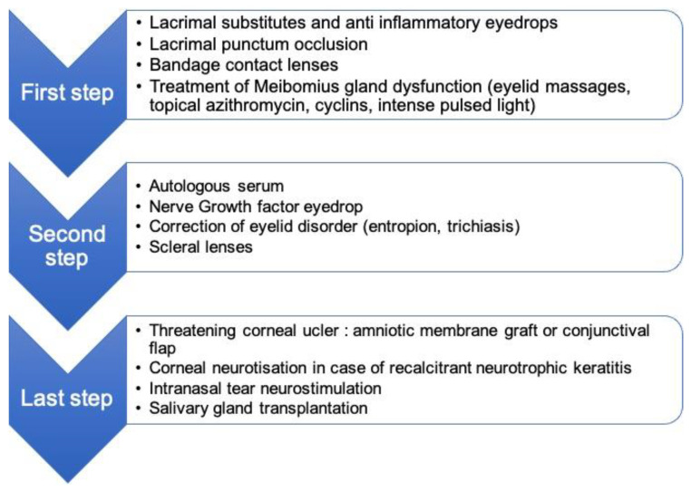

1470 — Khô mắt và bệnh bề mặt nhãn cầu do xạ ở trẻ / Radiation-induced dry eye and ocular surface disease in children
Tags: pattern:kho-mat pattern:loet-giac-mac pattern:teo-tuyen-le vung:be-mat-nhan-cau vung:hoc-mat vung:mat protocol:Schirmer protocol:OSDI score:CTCAE
Mức chắc chắn (certainty): tổng hợp y văn (literature synthesis) — số liệu chính lấy từ một nghiên cứu cắt ngang quốc tế 74 mắt của 38 trẻ sống sót sau ung thư cơ vân đầu–cổ, thời gian theo dõi trung vị 9 năm, có đo liều trên kế hoạch xạ trị gốc (Clin Transl Radiat Oncol 2026 — PMC13330630), một bài tổng quan về biến chứng không do ung thư của xạ vùng mắt–hốc mắt (Cancers 2022 — PMC8909862) và một nghiên cứu liều–đáp ứng trên 25 chó xạ trị u mũi xoang làm dữ liệu bổ trợ về ngưỡng tuyến lệ (J Vet Intern Med 2020 — PMC7096656). Cơ chế tế bào gốc của tuyến lệ và phần suy luận được ghi rõ.
Câu chốt: tuyến lệ là cơ quan nguy cấp (organ at risk) nhạy nhất trong trường xạ sọ–mặt ở trẻ, với ngưỡng thấp hơn nhiều so với thể thủy tinh và võng mạc: trong 74 mắt được đo liều, liều trung bình > 10 GyEQD2 vào tuyến lệ đã cho xác suất khô mắt > 20% ở lần theo dõi (trung vị 9 năm), trong khi đục thể thủy tinh chỉ xuất hiện đáng kể khi > 6 Gy vào thủy tinh và lệch nhãn cầu khi > 40 Gy vào hốc mắt (PMC13330630). Khô mắt ở trẻ không được báo vì trẻ không than đau — hậu quả là loét giác mạc, thủng, sẹo giác mạc và mù, những thứ có thể phòng được nếu tuyến lệ được khoanh (contour) và đặt ràng buộc liều ngay từ kế hoạch.
1. Tổng quan bệnh học – cơ chế hình ảnh (TẠI SAO)
1.1 Vì sao tuyến lệ là "điểm yếu" của trường xạ sọ–mặt
- Giải phẫu: tuyến lệ chính nằm ở hốc mắt phần trên–ngoài, ngay dưới trần hốc mắt và sát thành ngoài, chỉ cách da mi trên 5–10 mm — nghĩa là nó nằm trong đường vào của gần như mọi chùm tia hướng tới u hốc mắt, xoang, hố sau, hoặc thậm chí u não cận đường giữa.
- Mô học: tuyến lệ là tuyến nang thanh dịch (serous acinar); tế bào nang không phân chia nhưng tiết rất mạnh và có nhu cầu oxy cao. Tia xạ gây chết tế bào theo chương trình (apoptosis) ở tế bào nang, tổn thương vi mạch và xơ hóa ống tuyến → mất đơn vị tiết, không có nang tuyến mới thay thế (khả năng tái sinh nang tuyến ở tuyến lệ trưởng thành rất hạn chế). Vì vậy tổn thương là vĩnh viễn và tiến triển, không "hồi phục sau vài tháng" như niêm mạc. (Phần tái sinh: suy luận từ mô bệnh học; nghiên cứu trích dẫn chỉ đo liều–biến chứng, không đo tế bào gốc.)
- Ba lớp phim nước mắt cùng hỏng một lúc: tuyến lệ (lớp nước) + tuyến Meibomius ở bờ mi (lớp lipid, dễ tổn thương do xạ mặt) + tế bào đài kết mạc (lớp nhầy). Vì vậy khô mắt do xạ không đáp ứng đơn thuần với nước mắt nhân tạo nếu không xử lý viêm bờ mi và tế bào đài.
- Ngưỡng (số liệu người, trẻ): 74 mắt / 38 trẻ sống sót ung thư cơ vân đầu–cổ, theo dõi trung vị 9 năm, liều quy đổi GyEQD2:
| Cơ quan | Ngưỡng liều trung bình / tối đa | Biến chứng với xác suất > 20% |
|---|---|---|
| Tuyến lệ | Dmean > 10 GyEQD2 | Khô mắt |
| Hốc mắt | Dmean > 40 GyEQD2 | Lệch nhãn cầu (globe displacement) |
| Thể thủy tinh | Dmean > 6 GyEQD2 | Đục thể thủy tinh (mọi độ) |
| Võng mạc | Dmax > 40 GyEQD2 | Bệnh võng mạc do xạ |
| Thần kinh thị | Dmax > 53 GyEQD2 | Bệnh thần kinh thị do xạ |
(PMC13330630; đây là mô tả liều–độc tính đầu tiên cho nhiều cơ quan nguy cấp ở trẻ dựa trên đánh giá lâm sàng, không phải mô hình từ dữ liệu người lớn.)
- Dữ liệu bổ trợ trên thú (đọc để hiểu hình dạng đường cong, không dùng làm ngưỡng người): 25 chó xạ trị u mũi xoang, 5 (20%) khô mắt; liều trung bình tuyến lệ 33,08 Gy ở mắt khô so với 10,33 Gy ở mắt chứng (p < 0,001); liều thấp nhất gây khô 23,75 Gy; 0/… mắt nhận < 20 Gy bị khô so với **5/7 (71%)** nhận > 20 Gy; khô xuất hiện trung vị 111 ngày (84–122) sau xạ (PMC7096656).
1.2 Hình ảnh học nói gì — và KHÔNG nói gì
- Khô mắt do xạ là chẩn đoán lâm sàng, không phải chẩn đoán hình ảnh: chẩn đoán dựa trên Schirmer, thời gian vỡ phim lệ (TBUT), nhuộm fluorescein, OSDI. Hình ảnh không đo được lượng nước mắt.
- Tuy nhiên hình ảnh có ba vai trò thật:
- Lập kế hoạch: khoanh tuyến lệ trên CT lập kế hoạch (lát ≤ 1 mm) — tuyến lệ là cấu trúc mô mềm nhỏ, ở góc trên–ngoài, dễ bị bỏ sót khi khoanh; bỏ sót = không có ràng buộc liều = khô mắt.
- Biến chứng muộn: teo tuyến lệ, thay mỡ trên CT/MRI; loét giác mạc, mỏng/hủy nhuyễn giác mạc, sẹo kết mạc (symblepharon) trên đèn khe và trên ảnh chụp bề mặt.
- Loại trừ nguyên nhân khác: khối hốc mắt tái phát chèn ép, giãn hốc mắt sau xạ, hở mi do xạ (lagophthalmos).
- Vật lý: trên CT, tuyến lệ bình thường ~30–40 HU (mô mềm), nằm trong mỡ hốc mắt (−80 đến −100 HU) nên dễ thấy nếu cửa sổ mô mềm đúng; sau xạ, tuyến teo và thay mỡ → khó thấy hơn, đừng kết luận "tuyến lệ bình thường" khi không tìm thấy. Trên MRI, tuyến lệ T1 trung gian, T2 trung gian–cao, ngấm thuốc mạnh; sau xạ giảm thể tích, tăng tín hiệu T1 do mỡ thay thế — dấu hiệu teo tuyến, tương ứng mất chức năng tiết.
1.3 Vì sao trẻ nguy hiểm hơn người lớn cùng liều
- Trẻ có thời gian sống còn dài để biến chứng tiến triển (theo dõi 9 năm vẫn còn thấy tăng), hốc mắt nhỏ nên tuyến lệ gần u hơn theo tỉ lệ, và không tự báo triệu chứng: trẻ khô mắt nặng thường chỉ dụi mắt, sợ ánh sáng, chảy nước mắt phản xạ — dễ bị coi là bình thường.
- Vì vậy cùng một liều, trẻ có cửa sổ phòng ngừa rộng hơn (proton, điều biến liều, AMORE) và cửa sổ theo dõi dài hơn (khám mắt định kỳ nhiều năm).
1.4 Ngưỡng định lượng dùng ngay (lâm sàng)
| Đại lượng | Ngưỡng | Ý nghĩa |
|---|---|---|
| Schirmer I (không gây tê) | ≤ 5 mm/5 phút | Khô mắt nặng (thiếu lớp nước) |
| Schirmer I | 6–10 mm/5 phút | Khô mắt nhẹ–trung bình, cần đối chiếu triệu chứng |
| TBUT | < 10 giây | Bất ổn định phim lệ (thường kèm rối loạn tuyến Meibomius) |
| Nhuộm fluorescein | Tổn thương biểu mô dạng chấm (SPK) | Tổn thương bề mặt do khô, tính theo thang Oxford |
| OSDI | 0–100; ≥ 13 = có triệu chứng khô mắt | Công cụ tự khai, dùng được cho trẻ lớn |
| CTCAE v5 độ khô mắt | Độ 1 triệu chứng nhẹ; độ 2 cần can thiệp; độ 3 giảm thị lực do khô | Phân độ để báo cáo và theo dõi |
2. Mẫu hình + chẩn đoán phân biệt theo vị trí (gamut)
- Mẫu hình 1 — khô mắt "ướt": trẻ chảy nước mắt nhiều nhưng vẫn khô (chảy nước mắt phản xạ do bề mặt viêm) → đừng loại trừ khô mắt chỉ vì mắt ướt.
- Mẫu hình 2 — khô mắt "khô": kết mạc đỏ mạn, sợi nhầy, nhuộm fluorescein dương tính ở 1/3 dưới giác mạc — nơi phim lệ mỏng nhất và chịu ánh sáng.
- Mẫu hình 3 — tổn thương giác mạc: loét hình bầu dục/bờ cuộn, có thể vô khuẩn (do khô, hở mi) hoặc bội nhiễm; ở trẻ sau xạ, loét vô khuẩn do khô là nguyên nhân hay bị điều trị nhầm bằng kháng sinh kéo dài mà không bù nước mắt.
- Mẫu hình 4 — hở mi do xạ: da mi co kéo, mi trên không khép kín khi ngủ → khô nửa dưới giác mạc buổi sáng; xử trí khác hẳn khô do tuyến lệ (cần ghép da/vá mi, không chỉ nước mắt nhân tạo).
- Gamut theo vị trí (đọc từ ngoài vào): bờ mi (viêm tuyến Meibomius, hở mi, lông xiêu) → kết mạc (sẹo dính, thiếu tế bào gốc vùng rìa) → giác mạc (SPK, loét, mỏng, thủng) → tuyến lệ (teo, thay mỡ) → hốc mắt (lệch nhãn cầu, xơ hóa) → thần kinh giác mạc (giác mạc thần kinh dưỡng).
- Mnemonic "DREAM" cho khô mắt sau xạ ở trẻ: Dose (liều tuyến lệ > 10 Gy), Reflex tearing (chảy nước mắt phản xạ), Epithelium (nhuộm fluorescein), Acini loss (teo tuyến trên MRI), Meibomius (bờ mi).
3. Bảng so sánh phân biệt (ma trận đối chiếu)
| Thực thể (entity) | Hình ảnh / xét nghiệm điển hình | Chốt vào (rule-in) | Chốt loại (rule-out) | Gợi ý xác nhận |
|---|---|---|---|---|
| Khô mắt do xạ (tuyến lệ) | Tuyến lệ teo/thay mỡ; Schirmer ≤ 5 mm, TBUT < 10 s, SPK 1/3 dưới | Tiền sử xạ có tuyến lệ trong trường + Dmean > 10 GyEQD2 + Schirmer thấp | Schirmer bình thường, chỉ đỏ mi → nghĩ bờ mi/dị ứng | Đo liều từ kế hoạch, Schirmer, OSDI |
| Rối loạn tuyến Meibomius (MGD) | Bờ mi dày, đỏ, dầu đục, TBUT ngắn nhưng Schirmer bình thường | TBUT < 10 s + Schirmer > 10 mm | Schirmer rất thấp → có thành phần thiếu nước | Đèn khe bờ mi, meibography |
| Thiếu tế bào gốc vùng rìa (LSCD) | Vùng rìa mất sắc tố, kết mạc mọc vào giác mạc, nhuộm dương tính lan tỏa | Kết mạc hóa giác mạc + tiền sử xạ/hóa chất | Giác mạc trong, chỉ chấm điểm → không phải LSCD | Nhuộm rose bengal, tế bào học |
| Giác mạc thần kinh dưỡng | Loét bờ nhẵn, không đau, cảm giác giác mạc giảm | Mất cảm giác giác mạc (test sợi) + loét không đau | Đau nhiều, cảm giác bình thường → không phải | Test cảm giác, soi đèn khe |
| Loét do vi khuẩn/nấm | Thâm nhiễm đặc, mủ tiền phòng, đau tăng nhanh | Thâm nhiễm + phản ứng tiền phòng + tiến triển 24–48 giờ | Bờ nhẵn, không thâm nhiễm, tiến triển chậm → vô khuẩn | Cạo giác mạc nhuộm/cấy trước kháng sinh |
| Khô mắt do thuốc (hóa trị, kháng histamin) | Bề mặt khô nhưng tuyến lệ không teo, hồi phục sau ngừng thuốc | Trùng thời điểm dùng thuốc, cải thiện khi ngừng | Teo tuyến trên MRI → do xạ | Rà soát thuốc, thử ngừng |
| GVHD bề mặt (sau ghép tế bào gốc) | Kết mạc viêm, sẹo dính, khô nặng | Tiền sử ghép + tổn thương đa cơ quan | Chỉ khô đơn thuần sau xạ → do xạ | Sinh thiết kết mạc nếu cần |

Đường cong liều–độc tính cho khô mắt theo liều trung bình tuyến lệ (GyEQD2) ở 74 mắt trẻ; đường giữa là mô hình logistic, hai đường ngoài là khoảng tin cậy. Đường ngang 20% cắt trục liều ở ~10 Gy; đường 50% ở ~32–33 Gy. Nguồn: PMC13330630 Fig. 2B — CC BY-NC-ND (nguyên bản, không cắt).

Ba bậc điều trị khô mắt do xạ: bậc 1 nước mắt nhân tạo + chống viêm + bịt điểm lệ + kính tiếp xúc băng + xử lý tuyến Meibomius; bậc 2 huyết thanh tự thân, NGF nhỏ mắt, sửa mi, kính củng mạc; bậc 3 loét giác mạc đe dọa → màng ối/vạt kết mạc, thần kinh hóa giác mạc, kích thích thần kinh lệ qua mũi, ghép tuyến nước bọt. Nguồn: Cancers 2022, PMC8909862 Fig. 2 — CC BY 4.0.
4. Protocol chụp + hệ phân độ/điểm chuẩn hóa
4.1 Trước xạ — phần quyết định tất cả
- CT lập kế hoạch hốc mắt–sọ, lát ≤ 1 mm, không cản quang (hoặc có cản quang nếu cần phân biệt mạch): khoanh riêng tuyến lệ hai bên như một OAR độc lập, không gộp vào "hốc mắt".
- Ràng buộc liều gợi ý từ dữ liệu trẻ: giữ Dmean tuyến lệ < 10 GyEQD2 nếu có thể (ngưỡng mà xác suất khô mắt vượt 20%); với u cần liều cao, ghi rõ liều dự kiến vào tuyến lệ và đưa vào phần đồng thuận với gia đình (PMC13330630).
- Kỹ thuật giảm liều: proton (PBT) giảm mạnh liều ra ngoài đích so với photon; brachytherapy (chiến lược AMORE, phẫu thuật + áp nguồn) gần như không chiếu vào tuyến lệ nếu u khu trú; VMAT/cung điều biến cần kiểm tra liều tuyến lệ trong kế hoạch vì có thể tăng liều thấp lan tỏa.
- Mốc so sánh nội bộ: trong cùng một kế hoạch, kiểm tra tuyến lệ, thể thủy tinh, võng mạc, thần kinh thị, hốc mắt — vì ngưỡng chênh nhau rất lớn (6 Gy thủy tinh, 10 Gy tuyến lệ, 40 Gy hốc mắt/võng mạc, 53 Gy thần kinh thị).
4.2 Sau xạ — theo dõi và phân độ
flowchart TD
A[Trẻ đã xạ vùng mắt hoặc hốc mắt] --> B[Khám mắt nền: Schirmer, TBUT, OSDI, nhuộm]
B --> C{Schirmer dưới hoặc bằng 5 mm?}
C -->|Có| D[Khô mắt nặng: nước mắt nhân tạo không chất bảo quản + bịt điểm lệ]
C -->|Không| E{TBUT dưới 10 giây?}
E -->|Có| F[Xử lý tuyến Meibomius: chườm ấm, vệ sinh bờ mi, cycline]
E -->|Không| G[Theo dõi 6-12 tháng]
D --> H{Nhuộm fluorescein dương tính?}
F --> H
H -->|Có, chấm điểm| I[Bậc 2: huyết thanh tự thân, kính củng mạc]
H -->|Loét hoặc mỏng giác mạc| J[Bậc 3: màng ối, vá mi, hội chẩn giác mạc]
I --> K[Đánh giá lại 4-8 tuần]
J --> K
- Lịch khám: khám mắt trước xạ (nền), 3–6 tháng sau xạ, sau đó hằng năm kéo dài ít nhất 10 năm — vì biến chứng mắt muộn vẫn xuất hiện sau cửa sổ 5 năm của phác đồ ung thư (bài về ung thư cơ vân hốc mắt 2026 ghi đục thể thủy tinh ở 45%, trung vị 39,1 tháng, muộn nhất 95,1 tháng — PMC13204557).
- Phân độ để ghi hồ sơ: dùng CTCAE v5 cho khô mắt + thang Oxford cho tổn thương biểu mô; ghi liều tuyến lệ Dmean cạnh phân độ để lượt sau so sánh được.
5. Biến thể bình thường và cạm bẫy
- Chảy nước mắt ở trẻ không loại trừ khô mắt: phản xạ tiết nước mắt vẫn còn khi tuyến lệ còn một phần; trẻ chảy nước mắt + dụi mắt có thể đang khô nặng.
- Schirmer ở trẻ nhỏ: khó phối hợp, khóc khi làm → kết quả cao giả; hãy làm sau khi nhỏ tê (Schirmer I cải tiến) hoặc dựa vào nhuộm fluorescein + TBUT.
- Loét "vô khuẩn" bị điều trị như nhiễm khuẩn: nếu bờ loét nhẵn, không thâm nhiễm, không mủ tiền phòng, tiến triển chậm → nghĩ khô/hở mi; điều trị chính là bù nước mắt + vá mi, không phải nâng kháng sinh.
- Bỏ sót hở mi khi ngủ: khô nửa dưới giác mạc buổi sáng, nhuộm dương tính dải dưới — dấu hiệu này chỉ thấy khi hỏi kỹ giấc ngủ hoặc quan sát lúc ngủ.
- Tuyến lệ không thấy trên CT ≠ tuyến lệ bình thường: sau xạ tuyến teo/thay mỡ, cùng đậm độ với mỡ hốc mắt; hãy đọc MRI hoặc so sánh hai bên.
- Cạm bẫy "thỏa mãn tìm kiếm": đã thấy di căn/tái phát u thì dừng — trong khi khô mắt + loét mới là nguyên nhân giảm thị lực ở trẻ sống sót.
- Tương tác thuốc: hóa trị (đặc biệt cytosine arabinoside, 5-FU), isotretinoin, kháng histamin, thuốc nhỏ mắt có benzalkonium đều làm khô nặng thêm — luôn rà soát trước khi quy hết cho xạ.
6. Tự lượng giá — Blind Quiz (bấm để hiện đáp án)
Ca 1 — bé gái 7 tuổi, xạ 45 Gy sau mổ u cơ vân hốc mắt trái, khám lại sau 6 năm
- Gợi ý lâm sàng: mẹ kể bé dụi mắt, sợ ánh sáng, đôi khi chảy nước mắt; Schirmer mắt trái 4 mm/5 phút, phải 15 mm.
- Câu hỏi: (1) Đọc đường cong: ở liều tuyến lệ nào xác suất khô mắt vượt 20% và 50%? (2) Vì sao mắt chảy nước mắt mà vẫn khô? (3) Bước xử trí đầu tiên và điều gì không nên làm?
Bấm để hiện đáp án (findings + chẩn đoán)
- Đọc đường cong: đường 20% cắt trục liều ở khoảng 10 GyEQD2; đường 50% ở khoảng 32–33 GyEQD2 (PMC13330630).
- Chảy nước mắt vẫn khô: đó là chảy nước mắt phản xạ do bề mặt viêm; lượng nước mắt cơ bản vẫn thiếu (Schirmer 4 mm).
- Chẩn đoán: khô mắt do xạ + loét/biểu mô tổn thương — cần nhuộm fluorescein để xác nhận mức tổn thương.
- Bước đầu: nước mắt nhân tạo không chất bảo quản + bịt điểm lệ + xử lý bờ mi; không dùng corticoid kéo dài khi chưa loại trừ nhiễm và không chỉ tăng kháng sinh nếu loét vô khuẩn.
- Nguồn ảnh: PMC13330630 Fig. 2B — CC BY-NC-ND, nguyên bản.
Ca 2 — bé trai 5 tuổi, xạ hốc mắt 2 năm trước, nay đỏ mắt – sợ ánh sáng – nhìn kém dần
- Gợi ý lâm sàng: Schirmer 3 mm, TBUT 4 giây, nhuộm fluorescein dương tính 1/3 dưới, không mủ tiền phòng.
- Câu hỏi: (1) Xếp bậc điều trị nào và gồm gì? (2) Khi nào chuyển bậc 3? (3) Dấu hiệu nào khiến phải nghĩ loét nhiễm khuẩn thay vì khô đơn thuần?
Bấm để hiện đáp án (findings + chẩn đoán)
- Bậc 1 (bậc đầu): nước mắt nhân tạo + chống viêm, bịt điểm lệ, kính tiếp xúc băng nếu cần, xử lý tuyến Meibomius (chườm ấm, vệ sinh bờ mi).
- Bậc 2: huyết thanh tự thân, NGF nhỏ mắt, sửa mi (hở mi/lông xiêu), kính củng mạc.
- Bậc 3 (khi loét đe dọa): màng ối hoặc vạt kết mạc, thần kinh hóa giác mạc, kích thích thần kinh lệ qua mũi, ghép tuyến nước bọt.
- Nghĩ nhiễm khuẩn khi: thâm nhiễm đặc, mủ tiền phòng, đau tăng nhanh, tiến triển trong 24–48 giờ — khi đó cạo giác mạc nhuộm/cấy trước khi dùng kháng sinh.
- Nguồn ảnh: Cancers 2022, PMC8909862 Fig. 2 — CC BY 4.0.
Bài liên quan chéo
- 1458 – Bệnh thần kinh thị do xạ ở trẻ (RION)
- 1459 – Đục thể thủy tinh do xạ
- 1456 – Bỏng hóa chất giác mạc
- 1460 – Viêm giác mạc do nấm
- 1472 – Viêm giác mạc do Acanthamoeba
- 1419 – Võng mạc trẻ sau xạ trị
Ảnh
images/1470_duong-cong-lieu-tuyen-le_Bang_PMC13330630-Fig2B.jpg— đường cong liều–khô mắt, CC BY-NC-ND (nguyên bản).images/1470_bac-dieu-tri-kho-mat_Bang_PMC8909862-Fig2.jpg— bậc thang điều trị, CC BY 4.0.- Nguồn + giấy phép từng ảnh:
images/CREDITS.md.
Không dùng để chẩn đoán độc lập khi chưa có người hướng dẫn.